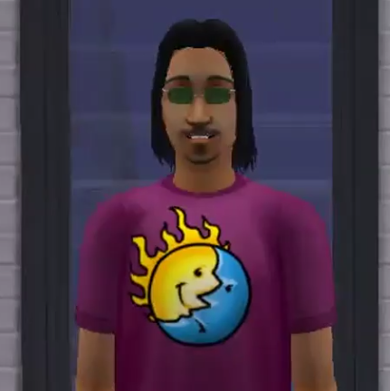

| Welcome to Strangetown | |||
|---|---|---|---|
| Case Files: | The Curious Family | ||
| Curious |
Known for their scientific prowess and fascination with extraterrestrial phenomena, the Curious brothers embody a blend of intellectual curiosity and adventurous spirit. Lazlo, the eldest, is a charismatic and outgoing Sim with a passion for exploring the mysteries of the universe. Pascal, the middle brother, is more introspective and analytical, often found engrossed in his scientific experiments and theories. Vidcund, the youngest, is creative and imaginative, balancing his scientific interests with a penchant for artistic pursuits. Together, the Curious brothers navigate the complexities of family dynamics while unraveling the paranormal mysteries that define their existence in Strangetown, including encounters with aliens, mysterious experiments, and the pursuit of scientific discovery amidst the desert landscape. Their storyline invites players to delve into themes of curiosity, exploration, and the quest for understanding the unknown within The Sims 2 universe. |
||
| Smith | |||
| Beaker | |||
| Specter | |||
| Strangetown | |||
|
|
|||
PascalPascal Curious is the middle child among the Curious brothers. Pascal is characterized by his introspective and analytical personality. He spends much of his time conducting scientific experiments and exploring theories about the universe, often immersing himself in books and research materials. Pascal's fascination with extraterrestrial phenomena is particularly noteworthy within Strangetown. He is known for his keen interest in alien abductions, UFO sightings, and other paranormal activities that occur in the neighborhood. His scientific curiosity leads him to actively seek out these phenomena, whether through stargazing at night or experimenting with equipment designed to detect alien signals. Despite his studious nature, Pascal also has a softer side. He cares deeply for his family, especially his brothers Lazlo and Vidcund, and is often the voice of reason or mediator during their familial disputes. His interactions with his brothers showcase a complex blend of sibling rivalry, camaraderie, and mutual support as they navigate the peculiarities of Strangetown together. |
|||
VidcundVidcund Curious is the youngest of the Curious brothers. Vidcund is characterized by his creative and imaginative spirit. While he shares his family's fascination with extraterrestrial phenomena, Vidcund approaches life with a blend of curiosity and artistic expression. In Strangetown, Vidcund is often found pursuing artistic endeavors, whether through painting, sculpting, or exploring creative outlets that reflect his eclectic interests. His artistic temperament sets him apart from his brothers, providing a balance to the family dynamics as he navigates the mysteries and peculiarities of their desert home. Despite his more artistic inclinations, Vidcund is also deeply involved in the Curious family's quest to unravel the paranormal mysteries of Strangetown. He contributes to their scientific endeavors by providing unique perspectives and occasionally assisting Pascal in his experiments. Vidcund's role within the family is pivotal, offering a creative lens through which to view the strange occurrences and supernatural phenomena that define their lives. |
|||
LazloLazlo Curious stands out as the eldest and most outgoing of the Curious brothers, residing in the mysterious neighborhood of Strangetown. Known for his adventurous spirit and charismatic demeanor, Lazlo is often portrayed as the life of the party, bringing a sense of energy and excitement wherever he goes. His outgoing nature contrasts with his brothers' more introspective and scientific inclinations, making him a colorful presence within the Curious family dynamic. In Strangetown, Lazlo is frequently seen exploring the desert landscape, mingling with neighbors, and seeking out social interactions that reflect his sociable personality. His interactions often lead to unexpected friendships and romantic entanglements, adding a layer of drama and unpredictability to his storyline. Despite his more carefree exterior, Lazlo shares his family's curiosity about extraterrestrial phenomena and is intrigued by the mysteries that surround Strangetown. His adventurous streak often leads him to investigate strange occurrences, encounter unusual characters, and uncover hidden secrets lurking beneath the town's surface. Within the Curious family unit, Lazlo plays a pivotal role as the eldest brother, offering guidance and support to his younger siblings, Pascal and Vidcund. His relationships with them showcase a blend of camaraderie, sibling rivalry, and familial loyalty, underscoring the bonds that unite the Curious brothers in their quest for knowledge and discovery. |
 | Back to top | © Emily Hubers 2024 | Powered by ChatGPT |